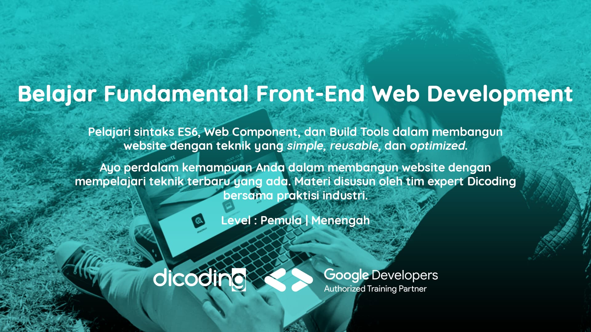
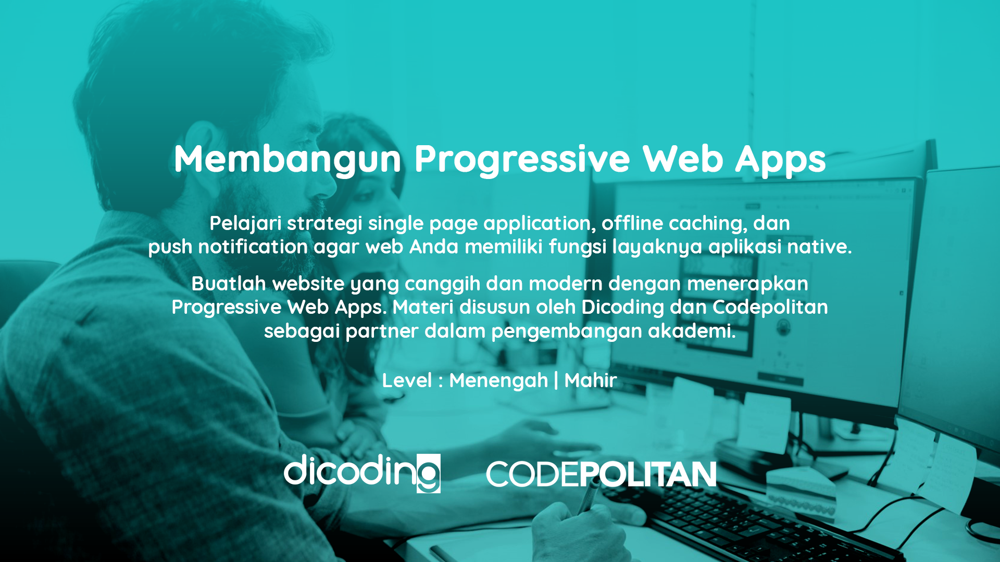

Front End Web Developer
Seorang Front-End Web Developer adalah Software Developer yang bertanggung jawab untuk merancang dan membangun berbagai aplikasi web secara responsif, interaktif, dan juga user friendly. Seorang Front-End Web Developer memiliki peranan
besar dalam pengembangan apiikasi web karena bertanggung jawab langsung kepada pengalaman pengguna. Di sini Anda akan diajarkan mulai dari dasar seperti pengenalan HTML, CSS kemudian menyusun layout yang responsif dengan Flexbox.
Lalu Anda juga akan belajar cara membangun website dengan UI yang interaktif dan menghubungkan website dengan back-end server yang keduanya dilakukan menggunakan JavaScript. Hingga Anda akan belajar bagaimana cara membuat website
yang dapat diakses secara offline dengan menerapkan Service Worker.
Kurikulum Front-End Web Developer di Dicoding telah dikembangkan dengan pelaku industri yang bergerak di bidang Web Development. Setiap langkah dalam learning path ini telah didesain agar siswa dapat memiliki pengetahuan yang cukup
untuk menjadi seorang Front-End Web Developer yang dapat memenuhi kebutuhan industri.
Belajar Dasar Pemrograman Web
Website di era sekarang sudah menjadi kebutuhan utama yang tidak bisa diabaikan. Seluruh sektor bisnis atau edukasi dapat memanfaatkan website sebagai alat untuk promosi, tukar informasi, dan lainnya. Per Januari 2019 terdapat 1.518.207.413
website yang aktif, berdasarkan survey dari Webcraft Webserver Survey. Bedasarkan data dari World Wide Web Technology Surveys, dari seluruh website yang aktif, 88.2% menggunakan HTML, 95.6% menggunakan CSS dan 95% menggunakan JavaScript.
Kelas ini membahas tuntas dasar HTML, CSS dan JavaScript sebagai tiga fondasi pembuatan website. Fondasi tersebut diperlukan untuk Anda yang ingin mengembangkan kemampuan pengembangan website ke tahap yang lebih lanjut. Disusun dan
diverifikasi oleh tim expert Dicoding, materi yang disajikan terstruktur dan komprehensif.
Belajar Fundamental Front-End Web Development

Ayo perdalam kemampuan Anda dalam membangun website dengan mempelajari teknik terbaru yang ada. Materi disusun oleh tim expert Dicoding bersama praktisi industri.
Website di era sekarang sudah menjadi kebutuhan utama yang tidak bisa diabaikan. Seluruh sektor bisnis atau edukasi dapat memanfaatkan website sebagai alat untuk promosi, tukar informasi, dan lainnya. Per Januari 2019 terdapat 1.518.207.413
website yang aktif, berdasarkan survey dari Webcraft Webserver Survey. StackShare, salah satu komunitas developer terbesar di Amerika, menyatakan terdapat ribuan produk internasional termasuk AirBnB, Instagram, dan Gitlab telah
menggunakan Web Component, Build Tools (seperti Webpack), dan AJAX seperti yang akan diajarkan pada kurikulum kelas ini.
Kelas ini membahas tuntas penerapan sintaks terbaru JavaScript, Web Component, Build Tools, dan AJAX untuk membangun website dengan teknik yang simple, reusable, dan optimal. Kurikulum telah disusun dan diverifikasi oleh tim expert
Dicoding bersama praktisi industri agar materi yang disajikan terstruktur dan komprehensif.
Membangun Progressive Web Apps

Buatlah website yang canggih dan modern dengan menerapkan Progressive Web Apps. Materi disusun oleh Dicoding dan Codepolitan sebagai partner dalam pengembangan akademi.
Membangun Progressive Web Apps (PWA) memiliki manfaat yang luar biasa, website Anda dapat diinstal pada mobile devices dan dijalankan secara offline. Selain itu, ServiceWorker sebagai salah satu komponen PWA dapat membantu meringankan
traffic transaksi hingga 84% pada website Anda. Dengan menerapkan PWA, website Anda dapat menggunakan fitur push notification yang dapat menarik konsumen untuk kembali mengunjungi website Anda. Penerapan PWA sudah terbukti membantu
AliExpress, bagian dari Alibaba Group, dalam meningkatkan konversi untuk pengguna baru di semua browser sebesar 104% dan di iOS sebesar 82%.
Menjadi Mobile Web Specialist
Pelajari teknik untuk mengoptimalkan suatu website ke dalam platform mobile dengan kurikulum lengkap dari Google bagi mobile web developer.